Interior Design
Residential interiors, layout planning, materials, lighting, storage and the design details that make a home work better.
RESIDENTIAL INTERIOR DESIGN · MUMBAI
Thoughtful interior design and space planning for everyday living. Make clearer decisions about layout, storage, lighting and materials, then choose the execution team that works for you.
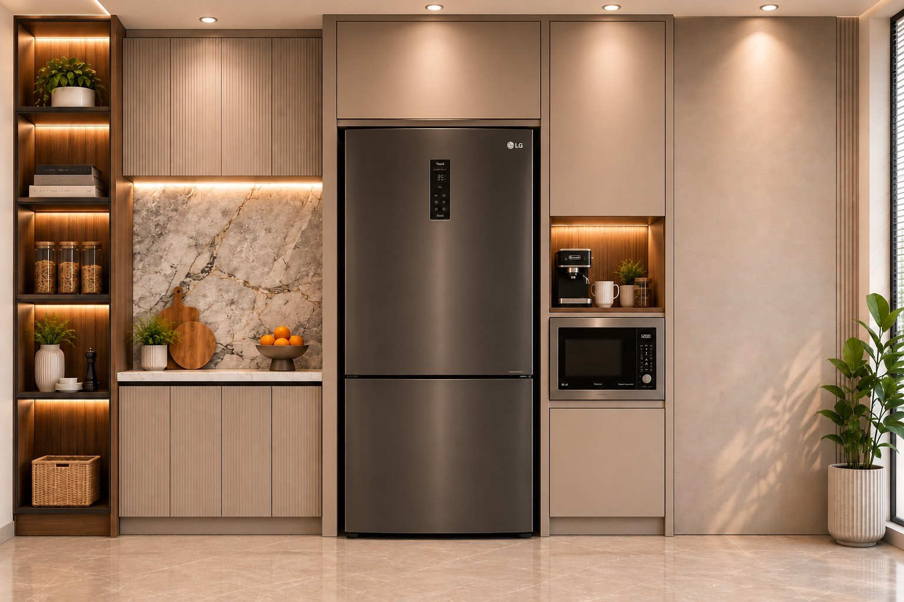
DESIGN BEFORE EXECUTION
We help homeowners think through layout, storage, lighting, materials and the way each room is used. Get clarity before execution begins, then choose the people you want to build with.
SELECTED WORK
Explore residential interior design studies first. Architecture and development projects remain available in the next collection.
RESIDENTIAL INTERIORS
A selection of interior design studies focused on practical planning, storage, materials and the details that shape daily life.
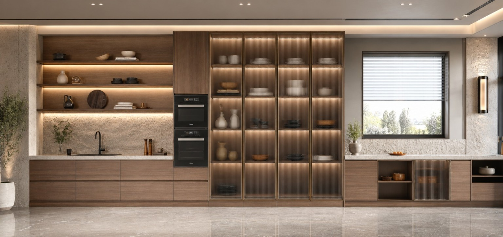
↗Material balance, practical storage and clear everyday working zones.
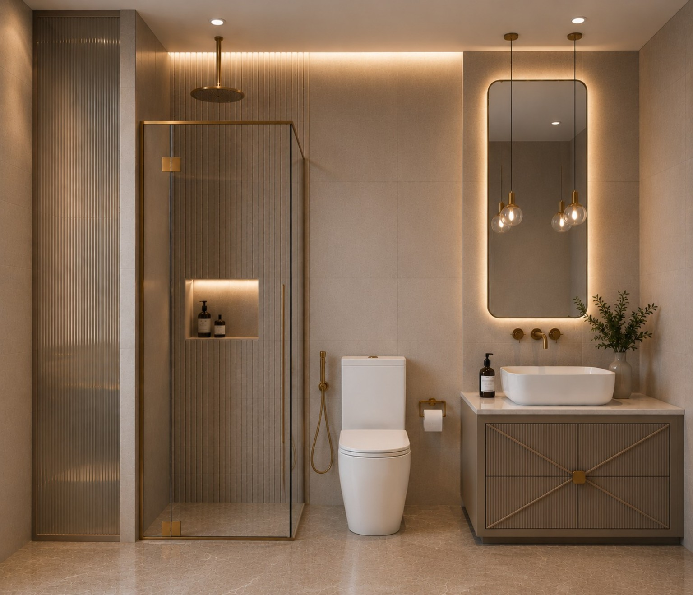
↗A calm material palette and considered transitions around the shower and vanity.
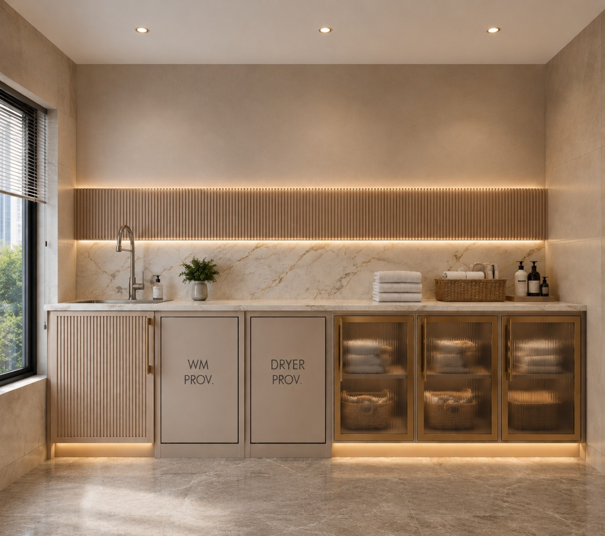
↗A compact utility study for organised storage, laundry routines and easy maintenance.
ARCHITECTURE & DEVELOPMENT
Explore architectural visual studies that consider massing, facade rhythm, landscape and the wider residential setting.
 ↗
↗Facade rhythm, vertical articulation and a landscaped edge.
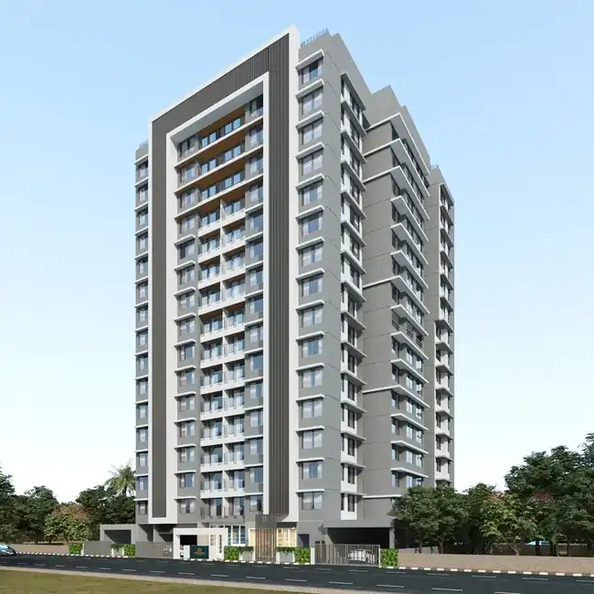
↗Composed massing with repeated openings and deep shadow lines.
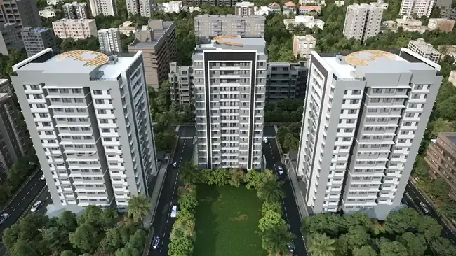
↗Multiple building masses organised around landscape and movement.
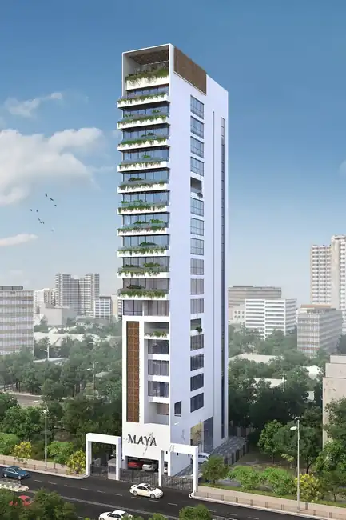
↗Slender vertical form with planted terraces and glazed openings.
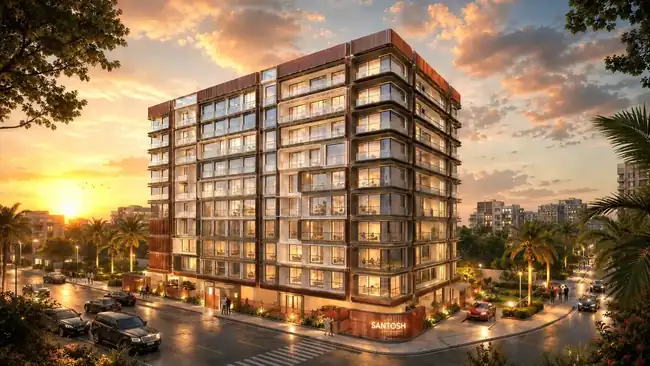
↗Broader massing, rounded framing and a warmer architectural presence.
INTERIOR DESIGN IN PRACTICE
Layout, lighting, storage and material choices should work together before execution begins.
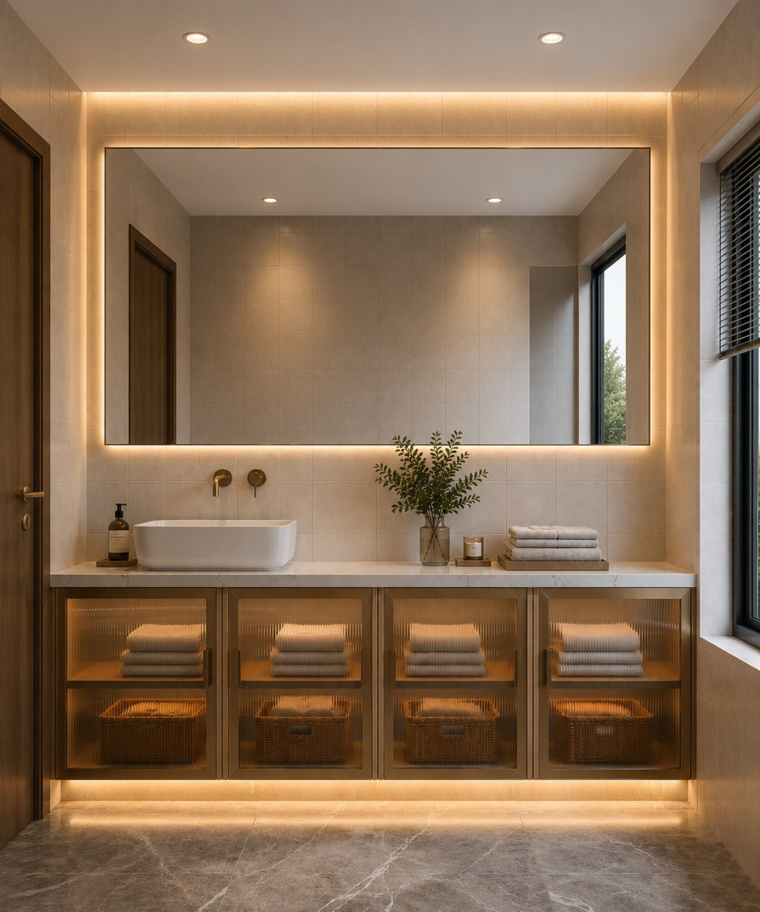
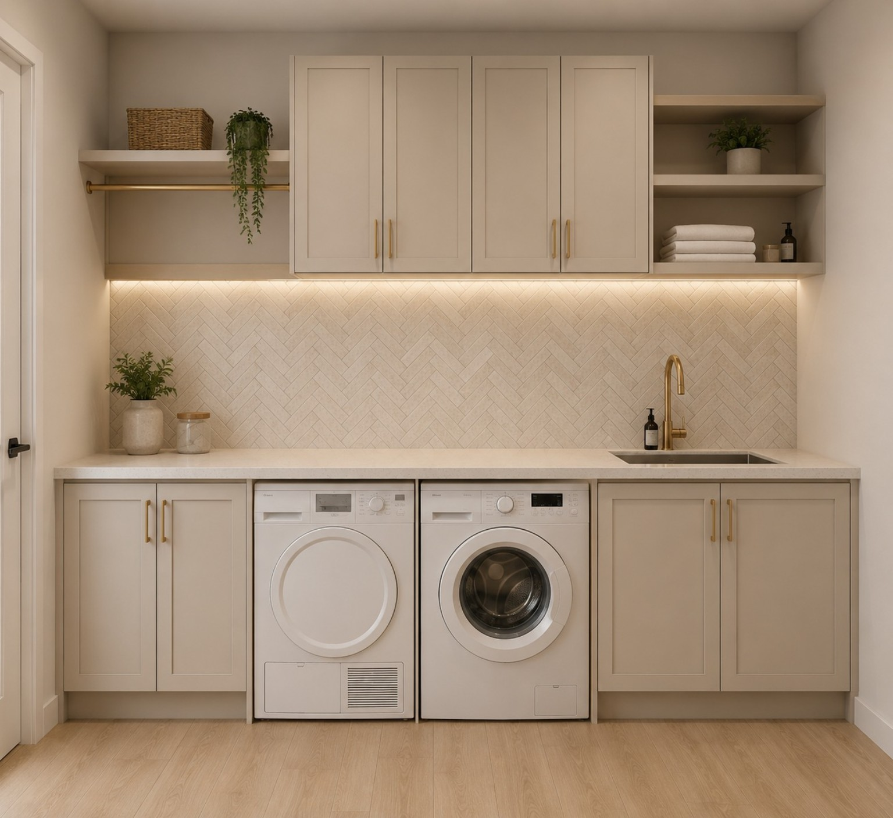
TRANSFORMATION
A considered redesign is more than a new finish. It brings layout, lighting, storage and daily use into the same conversation.
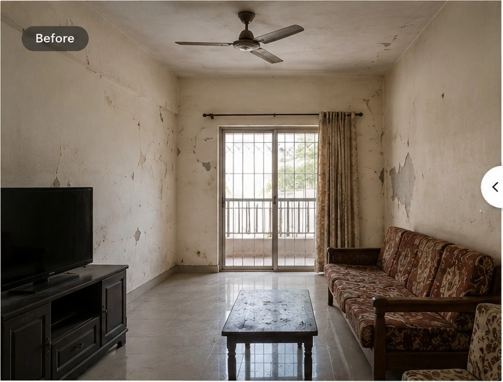

Planning a similar change? Start with a clear design brief before execution begins.
Talk through your space ↗HOW WE HELP
Design guidance that helps you make confident decisions and retain control over execution.
Residential interiors, layout planning, materials, lighting, storage and the design details that make a home work better.
Focused guidance on your home, priorities and next decisions, whether you are at the first idea or already planning execution.
Architectural concepts, residential and commercial planning, facade design, renovation and broader spatial direction.
Design documentation, coordination and execution guidance when needed. You remain free to appoint your own contractor.
A CLEARER PROCESS
Your routines, space, constraints and what needs to work better.
Layout, storage, lighting, materials and an integrated design direction.
Clarify the decisions and documentation you need before execution begins.
DESIGN FIRST. EXECUTE YOUR WAY.
Make decisions about layout, storage, lighting and materials before execution. Then appoint the team that suits your home and budget.
ARCHITECTURE & DEVELOPMENT
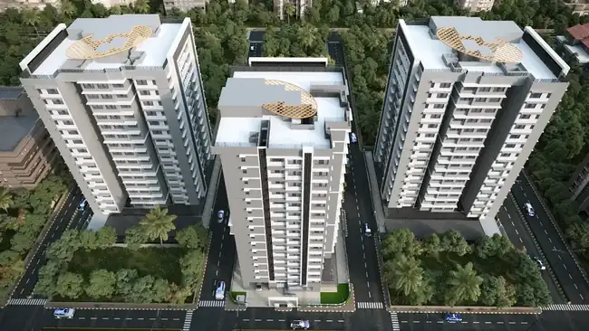
For new-build and larger architectural briefs, our visual studies explore proportion, rhythm, light and landscape, from the overall massing to the facade detail.
View architecture studies ↗
ARTISAN MATE FOUNDER'S NOTE
ABOUT ARTISAN MATE
“A space should do more than look beautiful. It should make everyday living feel considered, intuitive and entirely your own.”
Artisan Mate helps homeowners make clear, confident decisions about their interiors before execution begins. We focus on how spaces work, what they need and why each design choice belongs, while leaving you free to choose the execution team that suits your project.
Interior Design + Space Planning + Design Consultation
START A PROJECT
Tell us about the space you want to improve. We’ll help you identify the right first step, from a focused design consultation to a more complete interior brief.
Based in Mumbai · Residential interior design and consultation